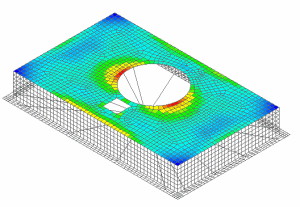

查看应力结果
查看顶面单元的 von Mises 应力结果。
 后处理导航器
后处理导航器
-
 Base excitation(位于 Response Simulation 1节点下方)
Base excitation(位于 Response Simulation 1节点下方) -
 加载
加载 -
 Base excitation(展开)
Base excitation(展开) -
 Von-Mises 应力 – 单元节点
Von-Mises 应力 – 单元节点
当您完成结果查看时，返回到模型。
 返回到模型(布局管理器对话框)
返回到模型(布局管理器对话框)
 文件→关闭→所有部件
文件→关闭→所有部件